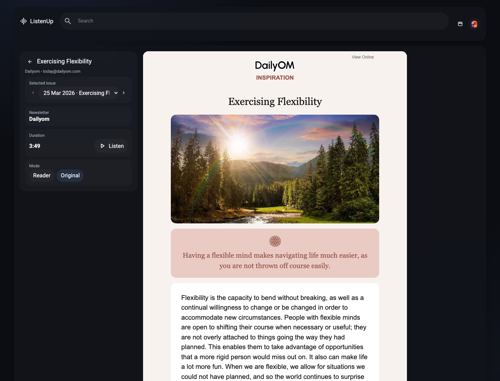

We are not paying for the Apple Developer Program yet, so this build is not signed or notarized by Apple.
macOS may warn that it cannot verify the app, so opening the prototype still takes one manual step.
Proof of Concept
ListenUp is a local-first macOS prototype for collecting newsletters, keeping the useful parts, and turning them into something easier to read or hear.

What we were building
A simpler desktop experience where newsletters live outside the inbox and can be opened as clean text or in their original layout.
Why local-first
It runs on your Mac, stores data locally, and avoids the cost and complexity of a hosted backend while the idea is still being tested.
Current prototype
Testing note
We are not paying for the Apple Developer Program yet, so this build is not signed or notarized by Apple.
macOS may warn that it cannot verify the app, so opening the prototype still takes one manual step.
Prototype build